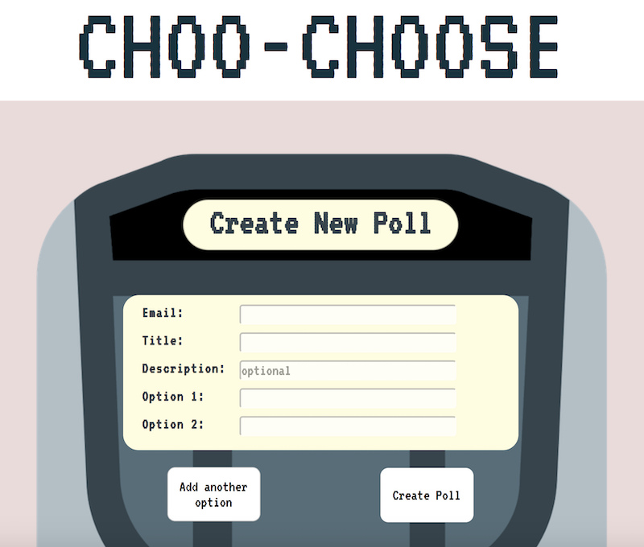

Angela Larryant
angelarryant@gmail.com
778-885-4807
alarryant
Summary
A junior web developer with a drive to creatively solve problems and to make things beautiful. With a background in detail-oriented work involving design and effective communication, I can produce beautiful and functional web applications to meet clients' needs. An extremely quick and independent learner, I can fluorish in a variety of professional environments.
Projects
Borker
Borker is a single-page Twitter clone full-stack web application created with HTML/CSS, JavaScript, jQuery, AJAX, Node.js, Express, and MongoDB. The 'borks' (posts) are stored in MongoDB and persist upon server restart. I also began to implement a 'likes' counter that allows the user to like individual posts. In the future, I would like to connect the 'likes' to the database so that they too will persist if the server is restarted.

Choo-Choose
Choo-Choose is a full-stack polling web application created with HTML/CSS/Sass, JavaScript, jQuery, AJAX, EJS, Node.js, Express, Knex, Mailgun and PostgresSQL. It is a collaborative project in which I was the lead front-end developer who created the majority of JavaScript and jQuery client-side logic, in addition to leading the CSS-styling of three of the four pages. I also helped connect our PostgresSQL database to the server. Throughout the development of Choo-Choose, thought and care was taken to improve user experience, such as implementing a button that copies the shareable URL to the user's clipboard to aid in sharing their poll.Employment
Ensembl.
Social Media Intern
Jan. 2018 - Aug. 2018
Vancouver, BC
- Maintained brand image through targeted social media interaction to increase number of followers.
- Produced high quality food photography and engaging blog posts on theme.
- Demonstrated organization and commitment through posting daily on several social media platforms, and successfully used Hootsuite to efficiently do so.
- Designed on-brand promotional material for product launch.
Burnaby Association of Community Inclusion
Contract Administrator
Feb. 2017 - Sept. 2018
Vancouver, BC
- Improved communication skills by serving as the point of contact between the organization and Community Living BC.
- Interpreted funding contracts and validated the agreement terms before processing.
- Maintained accurate records of supported individuals and their funding and programs.
- Participated in the development of an improved contract processing workflow that minimizes the risk of errors and leads to greater communication between parties.
London Drugs
Photo-Electronics Specialist
Jun. 2011 - Jun. 2017
Vancouver, BC
- Developed attention to detail through processing passport photos to meet rigorous standards.
- Suggested the best medium to display clients' treasured photographs based on their unique requests and circumstances.
- Improved eye for aesthetic through colour correcting and cropping clients' photographs.
- Designed promotional materials for product display using Adobe Photoshop.
Education
Lighthouse Labs
Web Development
Sept. 2018 - Nov. 2018
Vancouver, BC
University of British Columbia
Bachelor of Science in Food, Nutrition, and Health
Sept. 2013 - Nov. 2018
Vancouver, BC
Skill Stack
Languages, Frameworks, & Libraries
JavaScript, Node.js, jQuery, AJAX, Express, Knex, EJS, HTML/CSS, SASS, Bootstrap
Systems, CMS, & Databases
PostgresSQL, MongoDB, GitHub
Other
Adobe Photoshop, Hootsuite